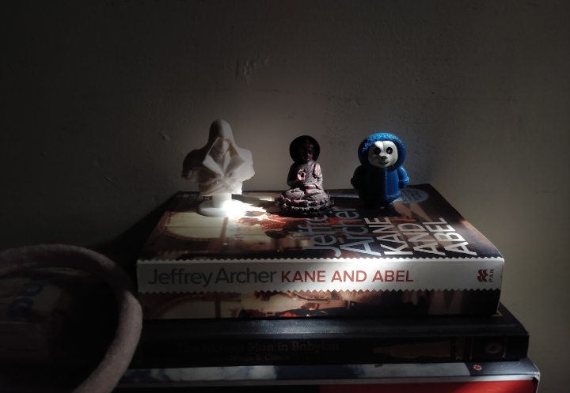

2022 was a year of diverse and exciting reading for me. I had the opportunity to dive into a wide range of genres, from science fiction to classic literature, and each book provided me with a unique and thrilling experience.
-
1. Soonish by Kelly and Zach Weinersmith. This book is a fascinating
exploration
of
technology and the future, and it took me on a journey to discover the possibilities of what's
to
come. From space elevators to 3D printing, this book gave me an idea of what we can expect in
the
future. It was one of my most intresting read of 2022. This was also my longest book of 2022.
- 2. Introducing Heidegger by Jeff Collins. I delved into the world of philosophy
with this book which provided me with an in-depth understanding of the life and work of Martin
Heidegger. It was him who announced end of philosophy and was a vocal supporter of Nazism. He was
of the opinion that when 'metaphysics is over; technology takes over'.
- 3&4. Two Gentlemen of Verona and Comedy of Errors by William Shakespeare. These
classic plays were a delight to read, filled with wit and humor that only Shakespeare can deliver.
I was struck by the themes of friendship, love, and betrayal in "Two Gentlemen of Verona" and the
comedic elements in "Comedy of Errors." Shakespeare's writing is timeless and it was a pleasure to
revisit these works. Looking forward to reading more of his work in the future. His works are
light-weight and made perfect travel companion.
- 5. Humphry's Playtime by Sally Hunter. For a touch of childhood nostalgia, I
read
this charming and enjoyable children's book that reminded me of the joys of childhood. This was
also my shortest book of 2022.
- 6. Revenge by King E Theodore. For some heart-pumping action, I picked up this
thrilling novel that disapointed me somewhat with the flow and the repetitive themes. Clearly Mr.
King was alien to the subject he was writing about.
- 7. Fluid by Ashish Jaiswal. This book gave an insight into the science of fluid
dynamics and its impact on our daily lives. The author's ability to make a complex subject
accessible and engaging was impressive. This is a very random pick and I feel lucky to have
stumbled across it. One of the only few self-help books I ever liked.
- 8. The Great Gatsby by F. Scott Fitzgerald. This classic novel is a commentary
on the excess and decadence of the Roaring Twenties. The characters were complex and the story was
a powerful commentary on the human condition. I was particularly impressed by the way Fitzgerald
portrayed the destructive nature of the American Dream.
- 9. Animal Farm by George Orwell This political satire tells the story of a
group of farm animals who overthrow their human farmer. The story is a powerful commentary on the
nature of power and corruption. I was particularly struck by the way Orwell used the story of the
animals to comment on the events of his time.
- 10. Siddhartha by Hermann Hesse. For a spiritual journey, I read this novel
that
tells the story of a young man on a spiritual journey to find enlightenment. But Hermann Hesse did
0 homework when he decided to write this book. At all his flaws and instances of cultural
appropriation, this could at best been an essay or a short story. What's more, even with desparate
attempts, the book is painfully shallow and is not even about Buddhism or the founder of Buddhism-
Siddhartha.
- 11. Neurofitness by Rahul Jindial. This book delves into the science of how the
brain functions and how we can optimize our brain's health and performance through various
techniques and practices. No book got me as hooked as this one did. The author talks about sleep,
drugs, food, plasticity, aging, creativity, learning, memory and what-not. Would definitely
recommend.
- 12. So long and thank you for the fish by Douglas Adams Funny as it is, I
haven't read the prequels and directly jumped to this one. I bought this book as a souvenir and I
never really planned on diving into the univrse of Douglas Adams but now I must say, I am hitched
(XD). Would definitely love to read the prequels in the future.